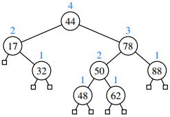
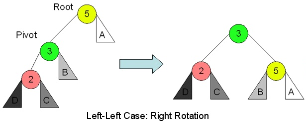

Self-balancing trees questions
What is the worst-case runtime of inserting an element into an AVL tree (including the time it takes to rebalance the tree)? Give your answer in Θ notation as a function of n (the number of elements).True or false: For any node in an AVL tree, the number of nodes in its left subtree and the number of nodes in its right subtree differ by no more than 1.
Explain what it means when we say that an AVL tree is height-balanced.
An AVL tree with 1 level must contain 1 node, but what is the minimum number of nodes in an AVL tree with 5 levels?

AVL tree. The blue numbers are heights.
Source: Goodrich p. 479
Suppose you insert 35 into the AVL tree. Show what the tree looks like after performing all necessary rotations to rebalance the tree.
Suppose you then insert 55 into the same tree. Show what the tree looks like after performing all necessary rotations to rebalance the tree.
What if you use a sorted resizable array to implement a set? What advantage does an AVL tree have?
A. Faster insertion and deletion
B. Faster searching
C. It uses less space
D. You can find the minimum element more quickly
For the question below, the Node class three fields:
E data;
Node<E> left;
Node<E> right;

Source: cpp.edu/~ftang
Write a method
Node<E> rotateRight(Node<E> root)
that takes a subtree's root as a parameter, performs a right rotation, and returns the new root. For example, if the parameter is the node labeled 5 in the tree on the left, transform it into the tree on the right and return the node labeled 3. You do not have to update the heights or balance factors.